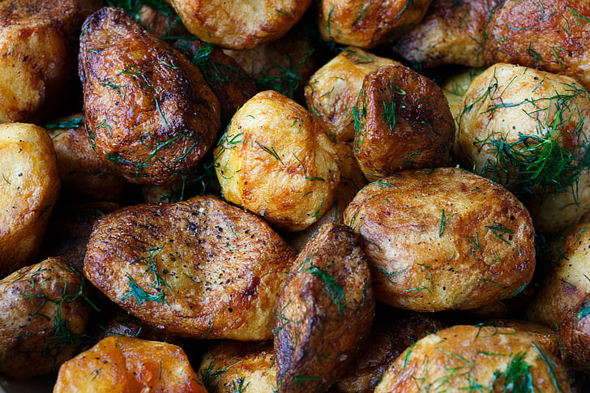

Air Fried Potatoes
Home

Desription
This recipe is great for a fast week night meal.
These potoatoes come out perfect crunchy and cripsy everytime!
In only 25 minutes.
Ingredients
- 1lb of baby potatoes (I prefer baby red pototoes)
- 1tsp seasoned salt
- 2tsp Italino seasoning
- 1tsp freshly cracked black pepper
- 2tbsp olive oil
- 1tsp onion powder
- 1tsp garlic powder
- 1 small bunch of parsley (optional)
Directions
- Cut all potatoes in half
- Finely chop parsley
- In a large bowl combine potatoes and spices
- Add olive oil to the bowl
- Mix until well coated with seasoning
- Preheat air fryer to 400 degrees for 5 minutes
- Add contents of bowl to air fryer basket and cook for 20-25 minutes
- Plate potatoes with some of the chopped parsley
- Serve immediately